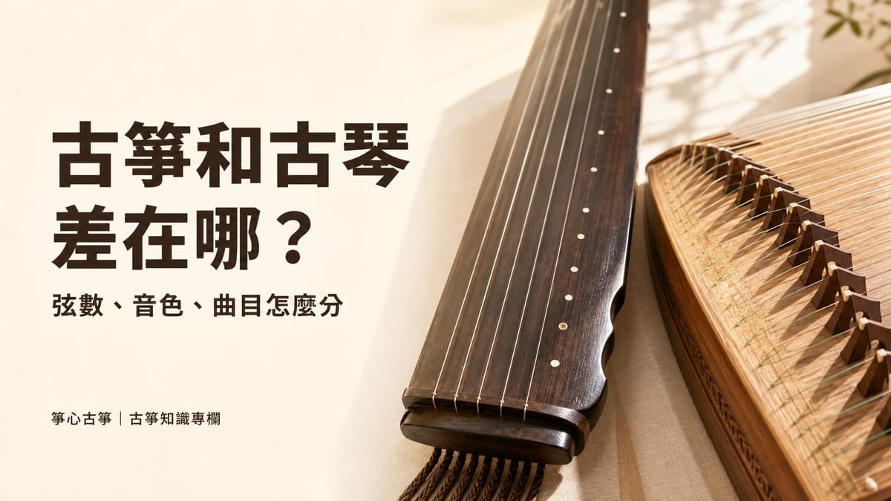
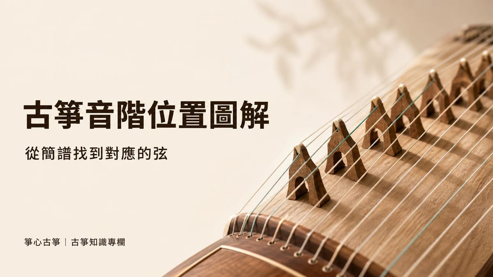

樂器知識
古箏和古琴有什麼不同？外型、音色、曲目一次分清楚
古箏和古琴常被搞混，但其實是兩種不同的樂器：古琴只有 7 弦、沒有琴碼，古箏最常見是 21 弦、每弦都有可移動的琴碼。本⋯

古箏的21條弦看似很多，其實只要抓住兩個規律，就能從簡譜上的數字快速找到對應的弦：第一，21條弦是依照音高「從高到低」依序編號，離彈奏者最近的是最高音的1弦，最外側的是最低音的21弦；第二，21弦古箏通常依D大調五聲音階定弦，只用大調音階中的1、2、3、5、6（Do Re Mi Sol La）五個音，跳過4（Fa）和7（Ti）。把這兩個規律搭配簡譜的八度點規則一起看，就能推算出任何一個音符大概落在哪一段弦上，不必死背21條弦各自叫什麼名字。
古箏琴身呈長方形，弦兩端架在山口上，中間則有可移動的雁柱（琴碼）撐起每一條弦。依照維基百科〈古箏〉條目的說明，古箏的高音弦最靠近彈奏者，低音弦則在最外側，弦序是由內至外編號，也就是從靠近演奏者的1弦，一路往外編到最遠的21弦。
換成白話來說：坐在古箏前面，右手邊、離身體最近的那一側是高音，一路往左手邊、離身體最遠的方向移動，音就越低。想確認自己數的方向有沒有錯，最簡單的方法是搭配調音器，用古箏調音器怎麼用？21弦D調定弦步驟這篇文章裡的步驟，先彈最靠近自己的那條弦，確認顯示的音是不是整組弦裡最高的，再彈最外側那條弦確認是不是最低的。
簡譜（又稱數字譜）用1到7代表大調音階的七個音級，也就是Do、Re、Mi、Fa、Sol、La、Ti。但古箏最常見的21弦D大調五聲音階，只使用其中的1、2、3、5、6，跳過4（Fa）和7（Ti）這兩個音。這種省略第4級與第7級的排列方式，就是音樂理論裡常說的大調五聲音階，不是古箏獨有的設計，許多傳統中國樂器與民謠都採用同樣的邏輯。
| 簡譜數字 | 唱名 | 是否有對應的古箏空弦 |
|---|---|---|
| 1 | Do | 有 |
| 2 | Re | 有 |
| 3 | Mi | 有 |
| 4 | Fa | 沒有，需要左手按弦才能彈出 |
| 5 | Sol | 有 |
| 6 | La | 有 |
| 7 | Ti | 沒有，需要左手按弦才能彈出 |
也就是說，看到簡譜上的4或7時，不會有一條弦直接對應，而是要靠左手在琴碼左側按弦，把旁邊的空弦音升高，彈出需要的音，可以參考基礎指法裡對左右手分工的說明。
同一個數字（例如1）可能出現在樂曲裡不同的高度，簡譜用數字上方或下方的小點來區分，點的數量代表差幾個八度：數字正上方多一個點，代表比原本高一個八度；正下方多一個點，代表比原本低一個八度；完全沒有點，就是和目前對照的基準音同一個八度。如果上方或下方出現兩個點，就是差兩個八度，點會直向疊在一起。
對照到古箏的弦上，差一個八度剛好等於差一組五聲音階。因為一組Do Re Mi Sol La用掉5條弦，所以簡譜上每多一個八度點，對應的弦大概就要往同方向（高音點往彈奏者方向、低音點往外側方向）移動5條弦左右。
把前面兩個規律放在一起看，古箏的21條弦可以想成由低音往高音、一組一組排列的五聲音階：
| 位置（由外側到彈奏者方向） | 這一組的音（簡譜） | 與下一組的關係 |
|---|---|---|
| 最外側（最低音）的一組 | 1 2 3 5 6 | 再往彈奏者方向移動5條弦，就是高一個八度的1 2 3 5 6 |
| 中間偏低的一組 | 1 2 3 5 6 | 同樣再移動5條弦，進入下一組 |
| 中間偏高的一組 | 1 2 3 5 6 | 同樣再移動5條弦，進入下一組 |
| 最靠近彈奏者（最高音）附近的一組 | 1 2 3 5 6 | 21條弦除以5會多出1條，所以最靠近彈奏者的那條弦通常是下一個八度的「1」，但沒有湊成完整一組 |
這張表不是要你硬背「第幾弦是什麼音」，而是示範一個可以套用在自己古箏上的邏輯：只要先確定一條弦目前是簡譜的哪個數字，再往彈奏者方向數，每數5條就是高一個八度的同一個數字；往外側數，每數5條就是低一個八度。
剛開始一定會數得比看簡譜還慢，這很正常。多練習幾次之後，常用的幾個音會自然記在手感裡，就不需要每次都重新數弦了。
古箏21條弦的音階位置，表面上看起來要背很多東西，但只要掌握「弦序從高到低、每5條弦一組五聲音階、簡譜八度點對應八度」這三個規律，大部分的對照都能自己推算出來，不必死記。如果你還在猶豫怎麼開始，新莊箏心古箏音樂教室提供$350體驗課，由老師一對一帶你實際摸到琴弦、現場示範怎麼從簡譜找到對應的音，比自己看文章想像更快上手。
依照維基百科〈古箏〉的說明，最靠近彈奏者的是最高音的1弦，最外側、離彈奏者最遠的是最低音的21弦。
沒錯。標準D大調五聲音階的21條弦只排列1、2、3、5、6（Do Re Mi Sol La），要彈4（Fa）、7（Ti）等音需要靠左手按弦把旁邊的空弦音升高，而不是直接有一條空弦對應。
差兩個八度，相當於兩組五聲音階的距離，大約是10條弦；但如果剛好用到弦的最外側或最靠近彈奏者、沒有湊成完整一組的那一條，實際位置可能會有1、2條弦的落差，建議還是用耳朵或調音器確認。
可以。老師通常會先教你認識簡譜數字與音名的對應關係，並從慢速、簡單的曲子開始練習指法，不需要先學會看簡譜才能上第一堂課。
會。本文以最常見的D大調五聲音階為例；若換成其他調式或現代無調式樂曲，同一條弦發出的音可能不同，需要重新用調音器確認每條弦目前調到的音名。
新莊箏心古箏音樂教室提供 $350 體驗課，由老師一對一帶你認識古箏、彈出第一段旋律。
本教室位於新北市新莊區（鄰近新莊體育場、新泰國中），採預約制，為確保上課品質平日不開放參觀；預約成功後將提供詳細交通資訊。